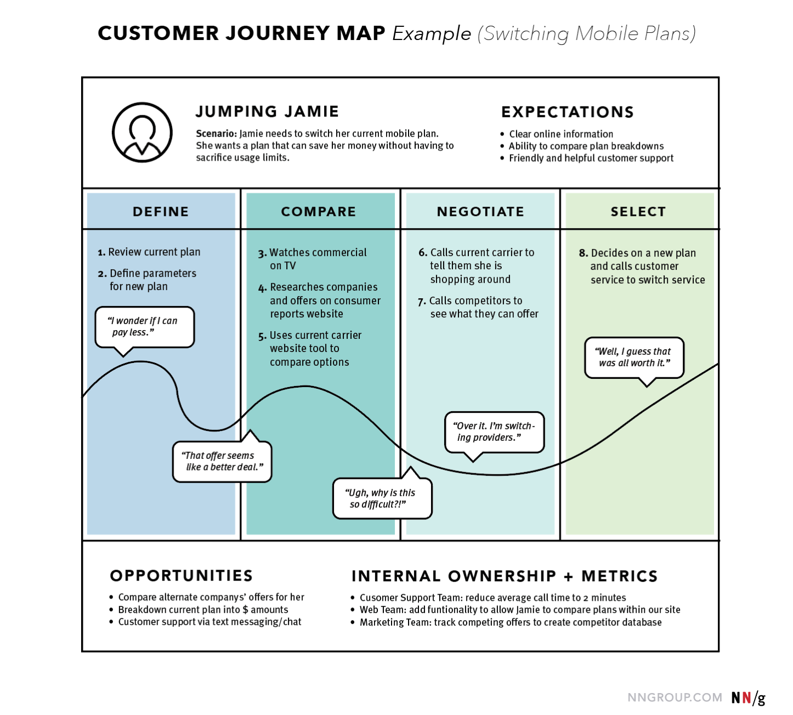

UX Strategy, User Journeys and Sitemaps
What is UX Strategy?
It’s the vision of a solution that needs to be validated with real potential customers to prove that it’s desired in the marketplace. Although UX design encompasses numerous details such as visual design, content messaging, and how easy it is for a user to accomplish a task, UX strategy is the ‘Big Picture.’ It is the high-level plan to achieve one or more business goals under conditions of uncertainty.

What parts should be included?
- A status of how your user experience as it stands
- A vision of how you wish to improve your UX
- Anticipated gains from improving your UX
- A list of metrics you'll use to measure the ROI of your activities
Why a UX Strategy is important
- By defining every aspect of your user experience before starting design, you are defining the direction for all of the design. This results in fewer misunderstandings, and less rework and resource waste.
- Keep up with user behavior patterns. To be competitive, you need to continue to predict expectations and delight users.
- Align around a shared vision.
UX Strategy Deliverables: Touchpoints, Empathy Maps & User Journeys
Touchpoints are all the points at which a user comes into contact with a brand. Part of a good UX strategy is understanding all of these points, and when / how they are meaningful.
- Websites
- Apps & Mobile Experiences
- Support Services
- Social Media

Empathy maps are a collaborative tool teams can use to gain a deeper insight into their customers. Much like a user persona, an empathy map can represent a group of users, such as a customer segment.
- Use when diving into customer segments.
- Elaborate on user personas.
- Capture the users thoughts and feelings, worries and aspirations from customer interviews
- Build out the "engaging" aspects within a user persona.

A journey map is a visualization of the process that a person goes through in order to accomplish a goal. Typically, the intention is to solve user problems with products / websites / apps etc.
What should be included in a Journey map?
- There are many ways to structure a journey map, but the key pieces to include are:
- The Who - The Persona / Actor / User. Provide one point of view per map in order to build a strong, clear narrative. For example, a university might choose either a student or a faculty member as actor — each would result in different journeys.
- The What - Scenario and Expectations - The task they are trying to accomplish, and what they expect as they complete the task. The scenario describes the situation that the journey map addresses and is associated with an actor’s goal or need and specific expectations. For example, one scenario could be switching mobile plans to save money, and expectations for it include to easily find all the information needed to make a decision.
Scenarios can be real (for existing products and services) or anticipated — for products that are yet in the design stage.
Journey maps are best for scenarios that involve a sequence of events (such as shopping or taking a trip) - The Phases - High level narrative of what your users are doing.Journey phases are the different high-level stages in the journey. They provide organization for the rest of the information in the journey map (actions, thoughts, and emotions). The stages will vary from scenario to scenario; each organization will usually have data to help it determine what these phases are for a given scenario. Here are some examples:
For an ecommerce scenario (like buying Bluetooth speakers), the stages can be discover, try, buy, use, seek support. For a big (or luxury) purchases (like test driving and buying a car), the stages can be engagement, education, research, evaluation, justification.
For a business-to-business scenario (like rolling out an internal tool), the stages could be purchase, adoption, retention, expansion, advocacy. - The How - the detailed actions, mindsets and emotions that occur within each phase.These are behaviors, thoughts, and feelings the actor has throughout the journey and that are mapped within each of the journey phases.
Actions are the actual behaviors and steps taken by users. This component is not meant to be a granular step-by-step log of every discrete interaction. Rather, it is a narrative of the steps the actor takes during that phase.
Mindsets correspond to users’ thoughts, questions, motivations, and information needs at different stages in the journey.
Ideally, these are customer verbatims from research.
Emotions are plotted as single line across the journey phases, literally signaling the emotional “ups” and “downs” of the experience. Think of this line as a contextual layer of emotion that tells us where the user is delighted versus frustrated. - Opportunities Insights and Takeaways - What was learned? What do we need to do? How do we ensure the user has what they need to feel joy while they accomplish their task? Opportunities (along with additional context such as ownership and metrics) are insights gained from mapping; they speak to how the user experience can be optimized. Insights and opportunities help the team draw knowledge from the map:
What needs to be done with this knowledge?
Who owns what change?
Where are the biggest opportunities?
How are we going to measure improvements we implement?


Examples


UX Strategy Deliverables: Sitemaps
What you learned last year.Reminder - what value does a sitemap provide?
- They show how the navigation should be structured.
- They help identify where content will sit and what needs to be produced
- They help show the relationship between different pages.
Additional Considerations
- Understand your audience.
- Mobile website/app vs Responsive Website, and sitemap best practices. (App/Mobile site may need a different navigation structure based on how your audience access the product)
- How media queries (responsive design) impact navigation. (collapsing and heirarchy)
- Stuck? How to organize your content for your audience. (card sorting etc.)
- Thumb navigation on mobile. (hamburger and bottom navigation)
In-Class Group Exercise
Company - Escape Room
Persona / Scenario: Riley is celebrating her 26th birthday in 3 weeks. She really wants to try something new, but also something that will allow her and her 5 friends to be social. She has heard about escape rooms, and seen social media posts about how those she follows are escaping from them, but other than that she knows very little. The ones she has seen posts about seem a little creepy, which she is cool with, however one of her friends tends to be turned off by blood and guts. Riley really wants to make sure that everyone will be happy, so no blood and guts. It has been years since her birthday landed on a Saturday, and she is really excited about celebrating on her actual birthday day - she is hopeful that everything can be planned and confirmed ahead of time so there are no variables that will impact the dinner they have planned for after this activity.
- Template: What phases will Riley go through?
- Stickynotes: What actions, mindsets and emotions could occur within each phase?
- Stickynotes: What did you learn? What do we need to do in order to provide Riley with a great experience?
- Stickynotes: Document the type of content you need and organize it for a website for the escape room.
Assignment - Turning a Journeymap (use goals etc.) into a sitemap (navigation and content organization)
As a parent, I want to plan a trip for my family for 7 days. My family includes my partner and 2 children - ages 10 and 12. We have not taken a vacation since the kids were toddlers, and we really want to find a place that is not too expensive, but will have entertainment and a variety of food options the kids will enjoy. Just as important, we want great wine and dining options for us adults to have some nights to ourselves. The kids are interested in trying out water sports, but we also want them to experience educational/historical/culturally interesting tours and such. The focus of the vacation is largely catering to the kids, but that does not mean that we dont want to take a break and have some adult time, and enjoy a good meal with some good wine. We are thinking beaches, watersports, and fine dining. We may want to hire childcare for 1, maybe 2 date nights... but that is a big maybe right now... we dont just want to leave our kids with anyone...
- Complete a journey map for the "Parents planning a vacation" scenario, and based on the learning outcomes you discovered, complete a sitemap for how you would design a website that would help families plan a vacation.
- Submission: Slack Channel
- Due January 31 2020 at 12:00pm
Evaluation Critiera
| Value | Outcomes |
|---|---|
| 5 | Your journeymap is organized, tells a story, and the relationship between the content (phases and actions / actions and feelings etc) is clear and easy to identify. |
| 10 | The content related to phases, actions, mindsets, and feelings within your journeymap aligns with the goals and information either directly stated or inferred from the scenario. |
| 10 | Opportunties are related to phases,actions,mindsets,feelings and solve provide value so the user can accomplish something on a website. This could be a feature, a piece of content, etc. |
| 15 | Sitemap: How did you take what you learned and conceptualize a website?
|